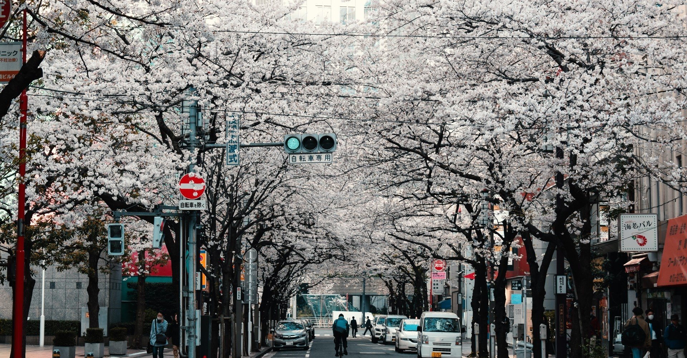

桜が舞い散る中、僕は君を自転車の後ろに乗せて立ちこぎしていた。
高校生だったあの頃。春が駆け足で僕らを追い越そうとしていた季節。
26歳の今。まだまだ昔を懐かしむ大人になんてなりたくないなあと思う。
そんな気持ちとは裏腹に、残業で疲れ切った会社帰りに通るあの道は、僕を容赦なく過去へと引きずりこんでいく。
ちっぽけな人生でも、17歳の頃の思い出は特別な輝きを放っている。
春香。
君の名前は一見普通に見えるけど、この季節がやってくるたび、その輝きに目を奪われた。
高校2年に進学した時にクラス替えが行われて初めての席。君は一番窓際で、僕の隣の席だった。
ことごとく仲の良い友人たちと別のクラスになってしまい、心細く感じていた僕の様子は、特別勘の鋭くない君にもすぐに伝わったようだった。
「あの私、斎藤春香っていいます。よろしくね」
「……道野公介です。よろしく」
今でも鮮明に覚えている。少し高い鼻に丸みを帯びた瞳。半開きになった窓から吹きこまれる春風が君の髪をなででいく。
僕はその長い黒髪が好きだった。
最初の会話をしてから、僕らは少しずつ話すようになった。
どうやら君も、仲の良い友人とは違うクラスになってしまったようだった。似た境遇もあって、僕らは春の日和に祝福されるみたいに、暖かな陽が降り注ぐ教室の片隅で言葉を重ね合った。
学校のこと。友人のこと。徐々に楽しくなり、やがてお互いについて気になり始めた。その頃から僕らはハル、ミチと呼び合っていた。
ハルはアコースティックギターを弾くことが好きだった。
「ギターのこと言ったの、ミチくんが初めて」
「じゃ、僕も秘密を打ち明けるよ」
そうして小説を書くことが好きだとハルに言った。ハルは瞳を輝かせながら、それを読みたいと言った。
恥ずかしさがありながらも、僕は誰にも見せたことのない物語が書かれたノートを手渡した。
「これ面白いよ！ ほかのも読みたい！」
そんな言葉をエネルギーに、僕は物語を書き続けた。書きたいことはいっぱいあったけど、物語の主人公はいつの間にかハルばかりになっていた。
それを見せるたび、うつむき加減になる様子を笑いながらも喜んでくれた。
「ねえ。私の歌に歌詞つけて」
物語を読み終えたある時、ハルは真面目な顔でそう言った。
「ミチくんの言葉なら、心から歌えそうな気がするの」
やがて僕らは歌を作った。
ハルのメロディに僕の言葉が乗っていく。
ハルの歌う声はいつもとは違うように聴こえた。
誰の懐にもすっと入りこんでしまいそうな声。僕はずっとそれを抱きしめておきたかった。
でも、そんな関係は長くは続かなかった。
高校3年になり、進路に悩みながらもお互いが選んだ道は全く違うものだった。
4年制大学に進学し将来は一般企業に勤めようと決めた僕と違って、ハルは音楽の専門学校を目指す道を選んだ。
未だに胸を締めつけるのは、なんであの時もっと自分を信じられなかったのかという思い。小説は趣味にしようと割り切った臆病な自分。ハルはあんなにも信じてくれていたのに。
今でもうまく言葉は見つからない。ハルの気持ちを思えば思うほど。
年を取るにつれて、人は時間が早く過ぎていくように感じるという。
ハルとの最後の日も、随分昔のように感じた。
「私たち終わろ。それぞれの希望に向かうために」
ハルと見た桜が、見事な紅葉色になった頃。秋風に吹かれる短い髪を見ながら、その強い意志を尊重しなきゃならないと思った。
ハルの別れを受け入れた静かな夜は、とても長く感じた。
あれから9年の月日が経った。
同窓会の便りが届いた時、僕は真っ先にハルの顔を思い出した。
穏やかな日曜の午後。ハルは大人びた雰囲気をまといながらも、あの頃と変わらない様子で同級生たちと話していた。
「懐かしいね」
遠目で見ていた僕のもとまで話しかけに来たハルは、心のよどみまでもすっかり洗い流してくれた。
ハルは音楽の専門学校を卒業後、インディーズでデビューしていた。
バンドは何度か組んでみたものの、最終的にはソロでデビューしたようだった。そして、メジャーデビューを目前に控えていると、ハルは瞳を輝かせる。
果てしなく遠くに行ってしまったような寂しさを感じつつ、僕は祝福の言葉を送った。
「まだまだ。これからよ」
謙遜する横顔を見るたび、僕は情けないほど脇役のように思えた。
ハルは相変わらず、僕の物語の主人公だった。
少し陽が傾いた頃。
駅まで送る口実をつけて、最近買ったばかりの安い車にハルを乗せた。
「車買ったんだね」
「仕事柄、遠くに行くことが多くて。今日も出先から来たんだ」
そんな他愛もない話の後、時間の隔たりが僕らを無口にさせた。
いつの間にか僕は頑なになっていた。でも、ふと横を見ると、ハルはいたずらな顔を浮かべていた。
「あの場所行ってみようよ。ちょうど見頃だと思うし」
すっかり移り変わった街並みを見て、静かに過ぎ去った時間のことを思う。
僕もこの街のように変われただろうか。車の速さが時間の過ぎる早さのように感じて、少し気分が悪くなった。
「見えてきたよ」
ハルが声を上げると、懐かしい桜道は何ら変わりなくそこにあった。
「せっかくだし、降りてみない？」
そう言って僕は車を駐めようとする。
「あれ、あの標識」
助手席に座るハルが指差した先には、駐車禁止の標識があった。
「あんなのあったっけ？」
「多分、昔からあったんだろうね。今まで見えていなかっただけで」
少し大人になった僕らの世界は、高校生の頃より自由になった分締めつけを受ける。
あの頃は見えなかった社会のルールに、僕はとても敏感になっていた。
でも、どうしても見ておきたかった。この景色を思い出にしないために。
社会が引き止めても、僕はハルと一緒に桜を見たかった。
桜道を通り過ぎ、少し離れたカフェの前でハルを降ろすと、その足で実家に戻った。ある物を取りに行くために。
「お待たせ」
口パクでそう言いながら、窓際の席でくつろぐハルに手を振る。少し古びた自転車は所々さびついていた。
「わざわざ取ってきたの？」
小走りで外に出てきたハルに、息を切らした顔でうなずいた。
「さ、後ろに乗って」
「えっ？」
ハルは珍しく顔を赤めている。
心は高鳴っていた。9年前の学校帰り、ハルを初めて呼び出した日のように。
久々に自転車にまたがる。少し低く感じるサドルと色のはげたハンドル。17の春が迎えに来てくれたようだった。
「一緒に行こう。桜を見に」
後ろに乗っても、ハルはまだ恥ずかしさを残していた。
顔を見なくても分かる気持ちに触れ、懐かしい思いが僕の胸を締めつけた。
「ちょっと重くなった？」
そう冗談めかすと、ハルの手が背中に飛んできた。温かい笑い声が耳まで届いた。
「さあ、出発！」
元気な声が響く。いつの間にか身軽になった気持ちで、僕はペダルをこぎ始めた。
今、僕はハルを後ろに乗せて立ちこぎしている。
そうだ。僕らはこんな風に、まだまだ夢を持って前に進めるんだ。
汗ばんだ体で必死にこいでいると、自転車のカゴに桜の花びらが入っていた。
暖かな陽気は誰にでも平等に降り注いでいる。
ハルはやがて僕らの歌を口ずさんだ。
すぐ近くに感じる体温。懐かしい確かな温もり。
どうしてもその顔を見たくて、後ろを振り返る。
変わらない笑顔と、すっかり伸びた黒髪が風に揺れている。
お互いの希望に向かう春の日。
僕らの車輪が廻るたび、世界はどうしようもなく美しさを増していく。